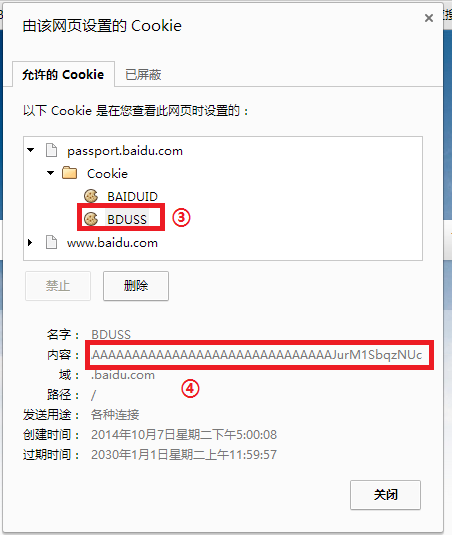

1.使用 Chrome 或 Chromium 内核的浏览器 2.打开百度首页 http://www.baidu.com/ 3.右键，点击 查看网页信息 4.确保已经登录百度，然后点击 显示 Cookie 和网站数据 5.如图，依次展开 passport.baidu.com -> Cookie -> BDUSS  6.按下 Ctrl+A 全选，然后复制并输入到上面的表单即可 请注意，一旦退出登录，可能导致 BDUSS 失效，因此建议在隐身模式下登录